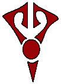

|
FEATURES
Screenshot Galleries
Transcripts
Cancelled
Episodes
Irken
Guide
ENCYCLOPEDIAS
A-Z Bios
Seating Charts
Planet
Guide
Alien
Species
Invaders
The Resisty
OTHER STUFF
Updates
Fan
Fiction/Art
Lizard Boy Shrine
Blotch Test (POS 2000)
Deleted Scenes
Links
THE MONKEY
Info
Games
Cursors
GUESTBOOK
View
Sign
E-mail

| |
|
Irken Society |
|
-Irken
Biology- -Irken Society- -Irken Classes/Jobs-
-Irken Military Vehicles- -Invaders-
|
|
Government
|
|
Irkens
live in a height-based society ruled by a single dictator (or in the
present case, a pair of dictators). The leader, the Tallest of the
Irkens, has complete control over the Empire and can do anything he/she
wants. While the Tallest do have supreme power, their kingdom is pretty
much a fully automated machine. They do not have to put much effort into
ruling, because the Irken Empire runs itself. Irk itself is like a giant
computer under the surface. The Tallest don't even have to make very
many decisions as they have the control
brains to serve as the thinkers. The main job of the Tallest is to
keep the Irkens in line and make sure THE IRKEN MACHINE is running
smoothly.
Official
Irken Currency: monies (may be spelt moneys) -Irken
coins have pictures of the Tallest on them |
|
Irken birthing and mentality
|
|
Irken birthing is a key aspect of how the Irken Empire functions the way
it does. Irkens are not born naturally, but instead in a huge
birthing
facility under the surface of Irk. Irken fetuses develop in the many
tubes that line the walls until they are at the right stage for
'hatching.' Automated machines remove the tube from the wall, crack it
open to drop the young Irken Smeet to the ground, then place its Pak
into its back. Why are Irkens born this way? Besides being an easy way
to keep a constant supply of soldiers for the military, it gives the
Empire complete control over its people. From birth, Irkens are fed all
the information they need through their Paks, but they are likely only
given what the Empire wants them to know. Thus they are brainwashed into
accepting their lives, and order amongst the Irkens is kept in place.
Also, tabs are kept on every Irken, no one is unaccounted for, and
everyone is put to full use. Lack of individuality can be blamed on the
way the Empire runs their lives.
One question brought up by the existence of a birthing machine is why
all the Irkens are different shapes and sizes instead of being a bunch
of identical clone things. This is just a theory, but it is what I
think. The birthing machine may create Irkens by randomly combining all
past genes (and eliminating reproductive organ genes to ensure that no
natural unmonitored Irken births occur), courtesy of the Control Brains
which would contain this kind of information about the Irken ancestors.
If the machines tried to use the same genetic information for all
Irkens, then there would be no Tallest or social class system. By not
manipulating the Irken genes, the Empire is kept in order.
|
|
Life
|
|
Life
for an Irken starts from the second an Irken Smeet is zapped to
consciousness. Fresh Smeets are dropped down further into the planet in a download
chamber, where they are pumped full of all the necessary information. After
this point, not everything is known. Irkens whose futures involve the
military get placed in underground training facilities for over 10
years, never seeing Irk's surface. It is not known whether or not every
Irken goes through this basic training though. Irkens marked to be
Service Drones are probably pulled from training and put straight to
work. It is unknown if there are any non-military Irken Civilians at
all, as such a vast Empire would be in constant need of new soldiers
(some good evidence against the existence of civilians is that Tak is
placed on the Janitorial Squad after she is denied a retake of the Elite
Exam instead of just being made a civilian). Most likely is that most
Irkens go through the basic training on Irk, and then they are separated
based on their skills. The best soldiers are sent to Devastis, where
they train for whatever military position they are after, whether it be
an Elite Soldier or otherwise. After their training is complete, they
are unleashed onto the Universe!
If a fully trained Irken (perhaps only the Invaders) encounters an
inescapable situation, they are expected to activate their personal
self destruct device. |
|
Historical Events
|
|
Horrible Painful Overload Day- This was the day Zim was born.
After the knowledge of the Download Chamber was uploaded to Zim, he
claimed the chamber as his own. He shoved the Smeet that came after him
back into the delivery chute, causing a clog that shorted the power on
the whole planet for 5 years.
Horrible Painful Overload Day part II-
When Zim and Skoodge abandoned their training to go see Irk's surface
for the first time, they
were attacked by a Dermis Prowler Security Droid guarding the area. The
damage caused while evading it plunged Irk into darkness for another 4 years.
Tallest Miyuki's death- During Zim's
time spent as a military scientist on Vort Research Station 9, Zim
created an infinite absorbing energy creature. The creature ate an
infinite energy producing thingy while Tallest Miyuki was visiting. The
creature grew out of control and ate Miyuki. This may be the source of
the rift between the once-allied Irkens and Vortians, as the Irken
Empire was unaware that Zim was the cause of Miyuki's death. Tallest Spork's death- While Zim was
training to be an Invader on Devastis, Tallest Spork gave a speech to
the invaders. Shortly after, the infinite absorbing energy creature
returned and ate Spork.
Operation Impending Doom I- The first
attempt at galactic conquest, made under Tallest Red and Purple's power.
It ended as soon as it began when Zim stole a Frontline BattleMech and
went on a rampage. Operation Impending Doom II-
The second attempt at galactic conquest, also made under Tallest Red and
Purple's power. This time Zim was sent far away to the isolated
planet Earth, in hopes that he would never interfere again. |
|
Holidays and Planned Events
|
|
The Great Assigning- This event is held on
planet Conventia. It occurs whenever there is some large galactic
take-over being planned. At the event, the chosen Invaders are revealed
and assigned to their planet of conquest. The Impending Doom operations
may be the only galactic conquest plans, but presumably other smaller
scale invasions have taken place judging by the planets seen under Irken
rule.
Probing Day- On this day, the Tallest
check up on any invaders assigned to a planet to see their progress. If
they are not satisfied, that invader gets a pummeling.
Final Canon Sweep- In any interplanetary
invasion, the first invader to successfully finish their work on their
assigned planet is celebrated. When the Armada arrives to perform the
organic sweep, the Tallest greet the invader personally. The invader
then gets the special treat of performing the final canon sweep on the
planet themselves. This tradition was altered for Invader Skoodge when
he conquered Blorch in Operation Impending Doom II; instead, he was
launched as the final canon sweep. Blood
sport- Irkens participate in
gladiator-style battles to the death. In a cut scene from The Nightmare
Begins, Zim was forced to combat the Digestor, an arena beast. |
|
Irken Symbols
|
|
Note: the meanings to these symbols are what I have heard to be their
original intention, but that is not necessarily always consistent on the
show. |
|
Military
The
symbol for the Irken Military is an exaggerated Irken face. |
Corporate
The Irkens have a friendly looking corporate logo to
give off a false image to their enemies. |
Invader
The Invader symbol is a "one-eyed" version of
the Military symbol, which I've heard represents the planet under Irken
control. |
Tak's symbol

Tak's symbol, seen
on her Deelicious Weenie base, is a feminine version of the Invader
symbol. It is probably not an official symbol. Tak is just one of the
few Irkens to enjoy being unique. |
|

{kind=link}
{kind=link}
{kind=link}
{kind=link}